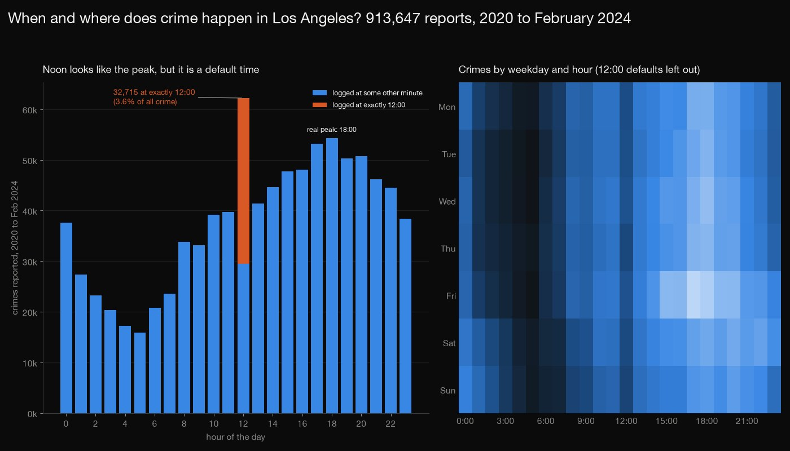
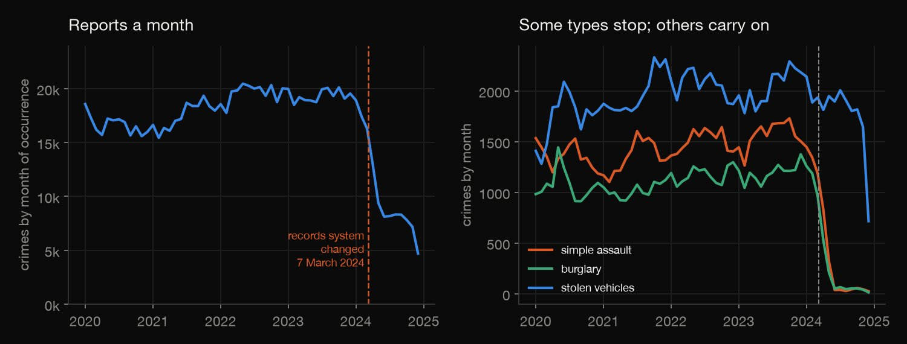
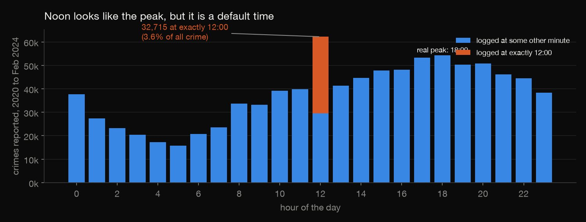
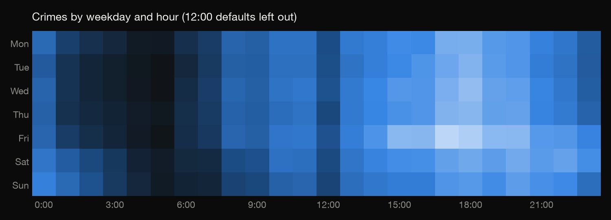
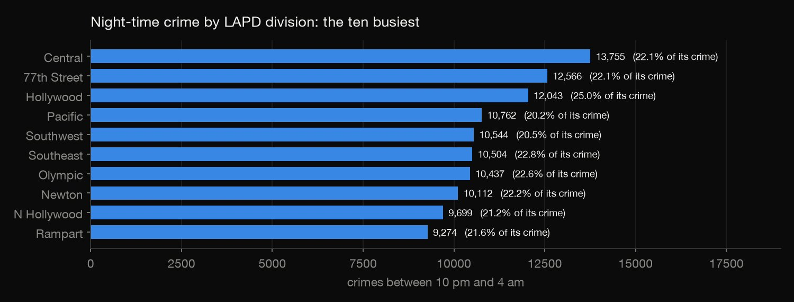
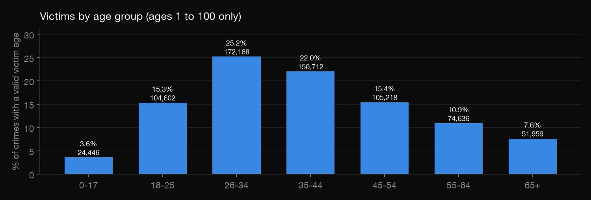
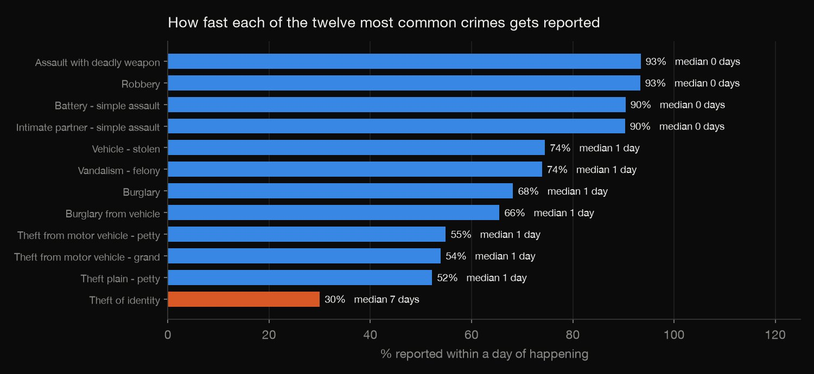

Python · Exploratory analysis · 2026-10
When and Where Does Crime Happen in Los Angeles?
913,647 LAPD crime reports from 2020 to February 2024, audited before they were analysed: noon is a default time of day, a change of records system makes 2024 look like a crime collapse, and the real peak hour, the busiest divisions at night and the victims' ages come out differently.

These are crimes reported to the police, not all crimes, and counts are not rates: divisions differ in population and in how people report. Times are heavily rounded and 12:00 stands in for "unknown", so the hourly shape is trustworthy only in outline. A zero victim age often means no individual victim or an unknown age. Reports from 1 March 2024 (after the LAPD changed records systems) were left out and not analysed.
01 — The problem
Los Angeles publishes every crime report the LAPD takes. The obvious questions are simple: which hour is the busiest, which divisions have the most night-time crime, and who are the victims? But the table has traps that would quietly spoil the answers, so the first job is to find them.
The questions follow DataCamp's "Analyzing Crime in Los Angeles" project; this version audits the table first.
02 — What I built
The LAPD's 2020 to 2024 table (1,004,894 reports), audited and cut to the 913,647 reports that are complete, and:
- The audit: a change of records system, a default time of day, and invalid ages and coordinates.
- When: crimes by hour, and by weekday and hour.
- Where and who: night-time crime by division, and victims by age group.
- What and how fast: the most common crimes, and how quickly each is reported.
- Check:
check.pystreams the raw CSV and recomputes every table in plain Python: 774 numbers agree.
03 — How it was built
- 01
Download the bulk CSV
The City of Los Angeles open data portal offers the whole table as one CSV: 1,004,894 reports in 28 columns, 50 MB compressed, public domain (CC0). The script records the row count and a checksum; the file itself isn't committed.
- 02
Look for a break before anything else
Crimes per month, from each report's occurrence date: between 15,440 and 20,467 a month until early 2024, then a slide to about 8,000 by June and under 5,000 in December. The portal explains why: on 7 March 2024 the LAPD moved to a new records system and this feed stopped. In those months the share of the more serious (Part 1) crimes jumps from about 60% to over 80%, and some crime types vanish. So every question below uses only crimes that occurred before 1 March 2024: 913,647 reports.
d = d[d["occurred"] < "2024-03-01"].copy() # every question below uses the complete period only - 03
Audit the rows that are left
No duplicate case numbers, no impossible times, nothing reported before it happened. Then the real problems: 3.6% of crimes logged at exactly 12:00, 39.3% exactly on the hour, a victim age of 0 on 25.1% of reports, some negative ages, and 2,240 reports with coordinates (0, 0).
("incidents at exactly 12:00", int(noon.sum())), ("share at exactly 12:00 (%)", round(100 * noon.mean(), 2)), - 04
Find the real busiest hour
Crimes are counted by hour with and without the 12:00 default. With it, noon looks like the peak. Without it, the hour from 12:00 to 12:59 has fewer crimes (29,503) than the hours either side of it (39,764 and 41,344), and the busiest hour is 6 pm.
- 05
Count night-time crime and victims
Night is 10 pm to 3:59 am, as in the brief, counted by LAPD division. Victim ages are used only if they are between 1 and 100, because 0 is a placeholder: that leaves 683,741 reports.
- 06
Measure how long reports take
The days from each crime to its report, for all crimes together and for the twelve most common types.
- 07
Recount it from the raw file
check.pystreams the raw CSV with plain Python (the csv module, counters and statistics; no pandas) and recomputes every table: the monthly series, the audit, the hours, the weekday-by-hour grid, the divisions, the age groups, the yearly counts, the crime types and the reporting times. All 774 numbers agree.wh = Counter((x[1].weekday(), x[3] // 100) for x in rows if x[3] != 1200)
04 — Results

The 2024 'collapse' is a records system. Crimes per month were 19,321 in September 2023 and 16,293 in March 2024, then 8,170 in July and 4,697 in December. Over the same months the Part 1 share goes from 60% to 75% and 81%, simple-assault reports fall from 1,343 (February) to 38 (July), and stolen vehicles stay between 1,800 and 2,000 until October. This is the new system, not the city. The 91,247 reports that occurred from 1 March 2024 are left out.
| Audit | Result |
|---|---|
| Logged at exactly 12:00 | 3.6% |
| Logged exactly on the hour | 39.3% |
| Victim age recorded as 0 | 25.1% |
| Coordinates (0, 0) | 2,240 |

Noon is a default. 32,715 crimes (3.6%) are logged at exactly 12:00, 52 times what an evenly used minute would get. With them counted, the busiest hour is noon (62,218); without them, hour 12 has 29,503 and the busiest hour is 6 pm (54,327). Times are rounded too: 39.3% fall exactly on the hour, against 1.7% if minutes were used evenly. Other defaults: 229,768 reports (25.1%) have victim age 0, which is no age; 137 are negative; 2,240 have coordinates (0, 0).

With the 12:00 default left out, Friday is the busiest day (134,279 crimes) and Tuesday the quietest (120,961). The busiest hour of the week is Friday at 5 pm (8,739 crimes) and the quietest is Tuesday at 5 am (2,098).

Night-time crime by division: Central 13,755 (22.1% of its crime), 77th Street 12,566 (22.1%), Hollywood 12,043 (25.0%, the highest share), Pacific 10,762, Southwest 10,544 and Southeast 10,504.

Victims, among the 683,741 reports with a valid age: 26 to 34 is the biggest group (25.2%), then 35 to 44 (22.0%), 45 to 54 (15.4%), 18 to 25 (15.3%), 55 to 64 (10.9%), 65 and over (7.6%) and 0 to 17 (3.6%).
Over time. 199,847 crimes in 2020, 209,876 in 2021 (+5.0%), 235,259 in 2022 (+12.1%) and 232,345 in 2023 (−1.2%). The most common type is stolen vehicles (97,701, 10.7%), then simple battery (72,211) and identity theft (57,770), which rose from 9,040 in 2020 to 13,617 in 2023.

Reporting. The median report is filed 1 day after the crime: 49.0% the same day, 70.6% within a day, 86.8% within a week, and 6.1% after more than a month, the slowest after 1,862 days. Aggravated assault and robbery are reported within a day 93% of the time; identity theft only 30% (median 7 days).
05 — What I'd do next
- Add the LAPD's new NIBRS offence and victim datasets, which began in October 2024, to continue the series past the change of system.
- Divide by population or by area to turn counts into rates, so divisions can be compared fairly.
- Map the reports below division level, after dropping the (0, 0) coordinates.